The Oertha Armorial
PATENTS OF ARMS
of Oertha
Chivalry, Laurels, Pelicans, Defense, Mark
Updated 7/29/26
If some blazons do not appear, refresh/reload the page once.
Anyone with any of the following:
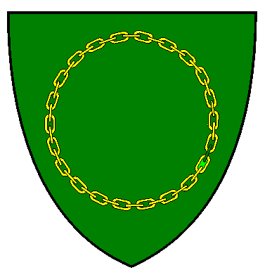 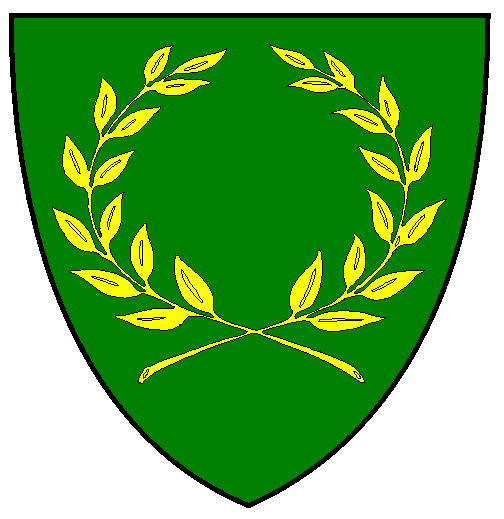 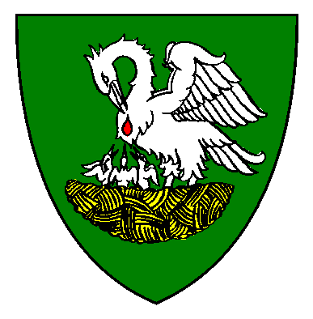
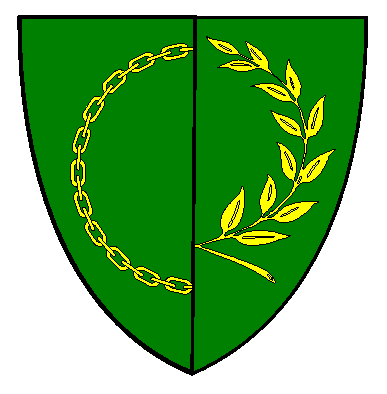 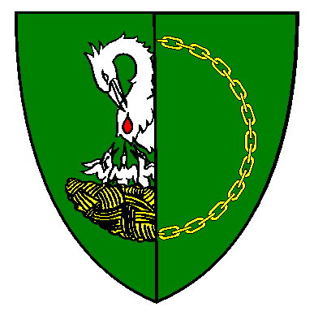 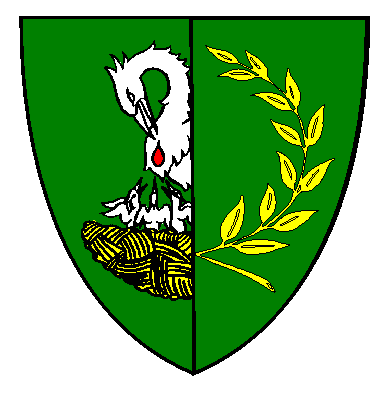 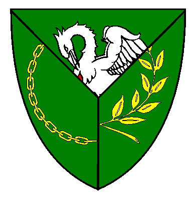
has no personal arms registered with the College of Arms
Most of the information herein is based on the
Master (of Arms) Ulrich von Matanuska 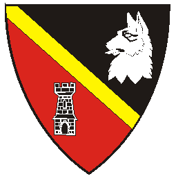
Award of Arms April 4, A.S. X (1976) in Atenveldt
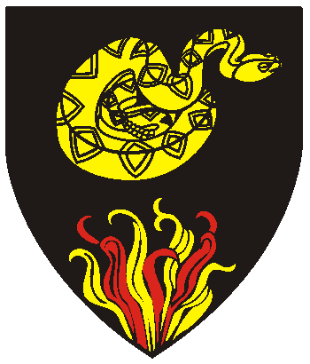
Award of Arms May 3, A.S. XIII (1978) 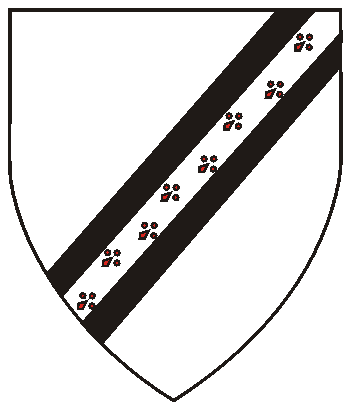
Leaf of Merit/AA January, A.S. XIII (1979)
Award of Arms January 20, A.S. XIII (1979)
Award of Arms January, A.S. XIII (1979)
Award of Arms January, A.S. XIII (1979) 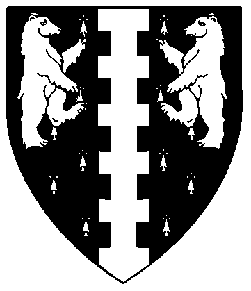
Rose Leaf/AA August, A.S. XXII (1987) 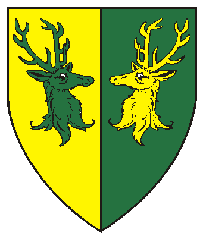
Award of Arms September 13, A.S. XV (1980) 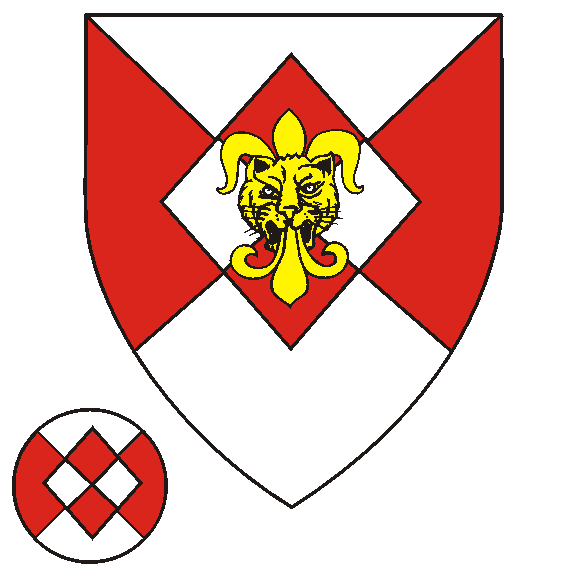
Grant of Arms January 8, A.S. XVII (1983) 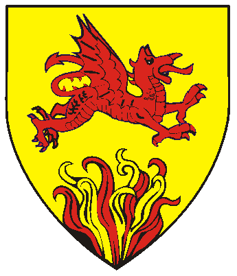
Award of Arms May 13, A.S. XIII (1978) 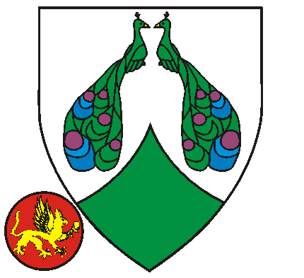
Award of Arms Sepember 13, A.S. XV (1980) 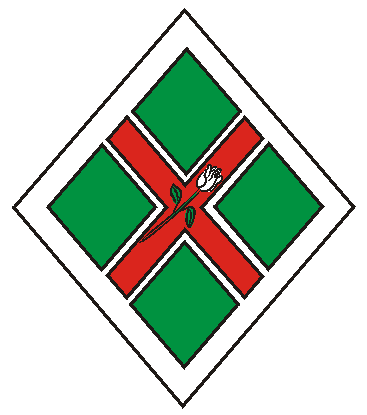
Award of Arms March 22, A.S. XIV (1980) 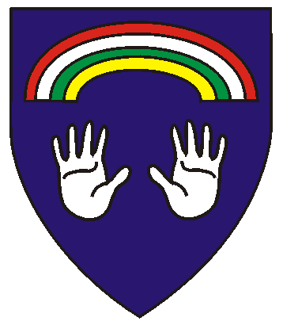
Award of Arms May, A.S. XV (1980) 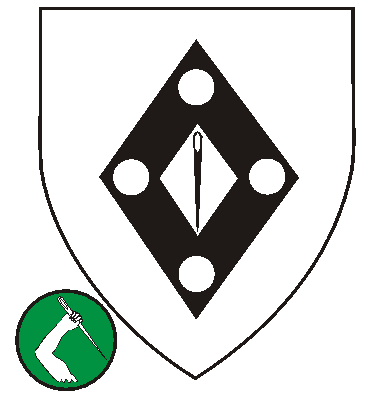
Leaf of Merit/AA June, A.S. XIII (1978) 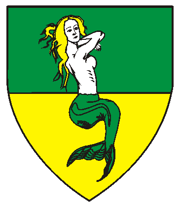
Award of Arms January 23, A.S. XVI (1982) 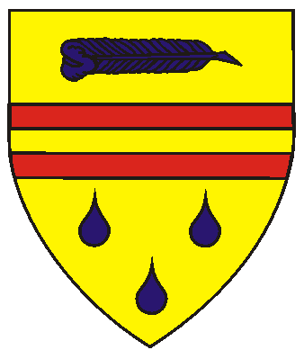
Award of Arms December 5, A.S. XVI (1981) 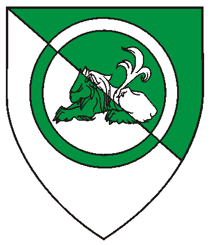
Award of Arms January 8, A.S. XVII (1983) 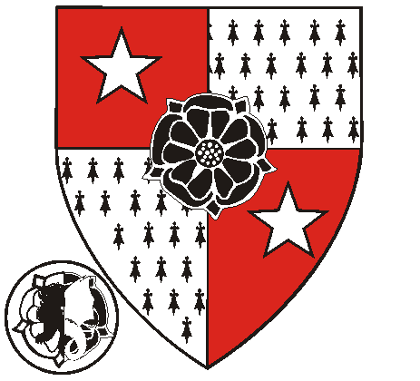
Award of Arms July 13, A.S. XX (1985) 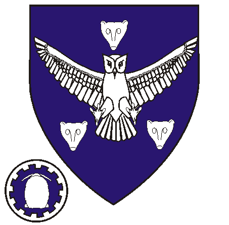
Court Baron July 14, A.S. XIX (1984) 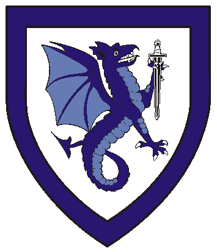
Award of Arms July 25, AS XXII (1987) 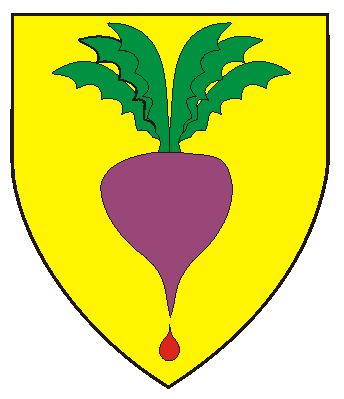
Award of Arms January 13, A.S. XIII (1979)
Award of Arms January 22, AS XXIII (1989) 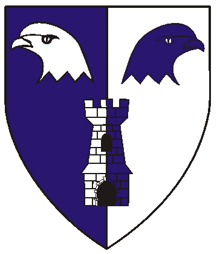
Award of Arms January 8, AS XVII (1983) 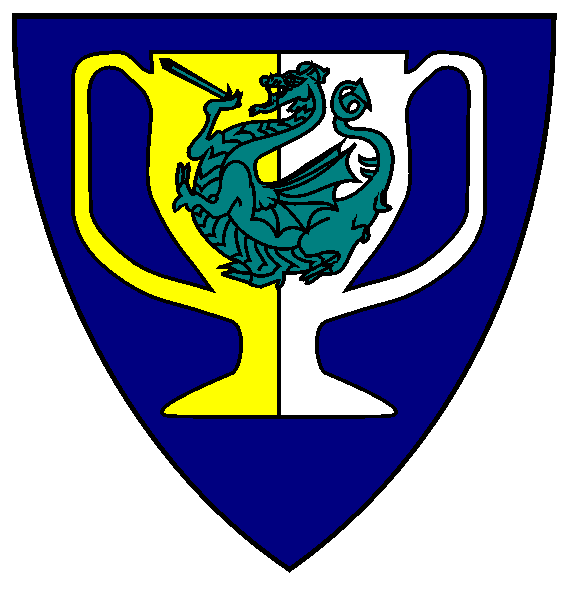
Award of Arms January 28, A.S. XVIII (1984) 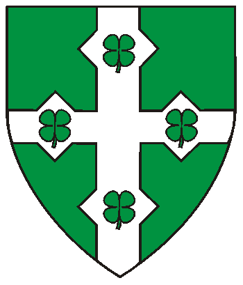
Award of Arms January 23, AS XXII (1988)
Award of Arms September 13, AS XV (1980) 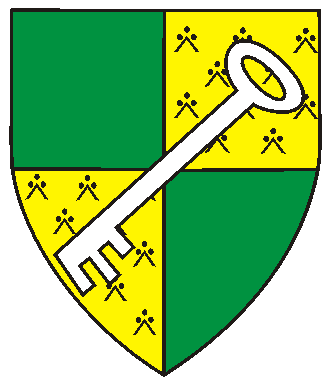
Award of Arms January 5, A.S. XIX (1985) in Atlantia 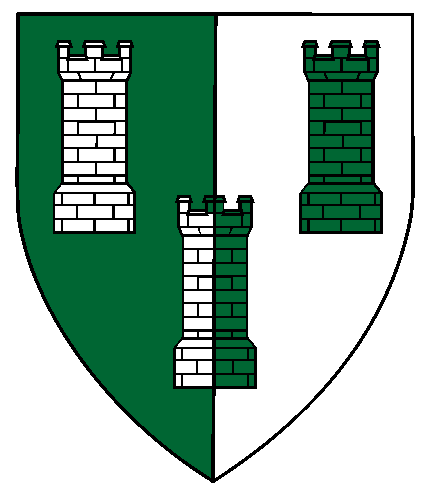
Badge: 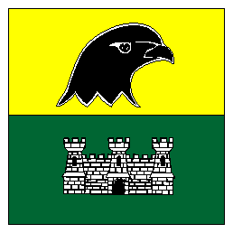
Award of Arms July 25, A.S. XXII (1987) 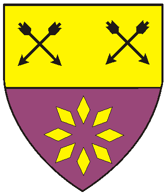
Award of Arms June 28, A.S. XXI (1986)
Award of Arms May 21, A.S. XXIV (1989) 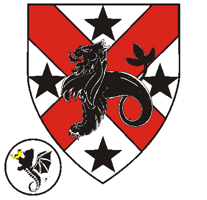
Award of Arms July 13, A.S. XX (1985) 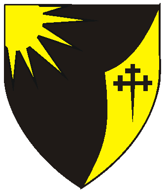
Award of Arms July 14, AS XIX (1984) in the West 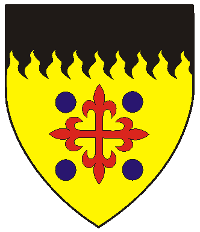
Pelican July 23, A.S. XXIX (1994) 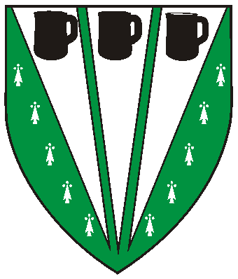
Award of Arms January 17, AS XXI (1987) 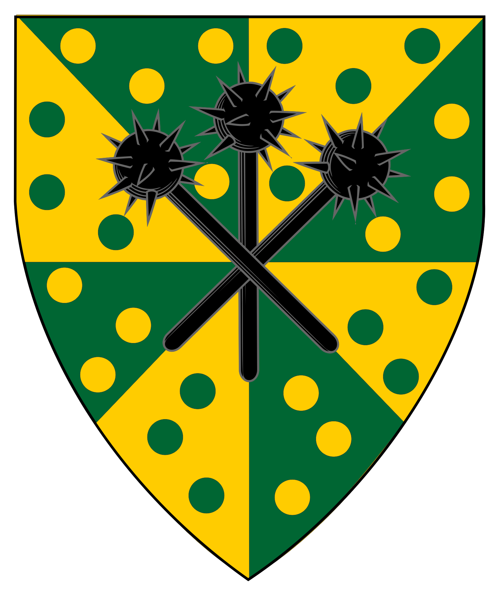
Award of Arms November 3, AS XXV (1990) by Gunnarr & Gabriell of An Tir 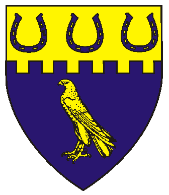
Award of Arms May 14, A.S. XXIV (1989) 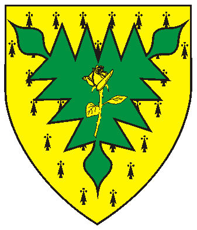
Award of Arms August 15, A.S. XXVIII (1993) 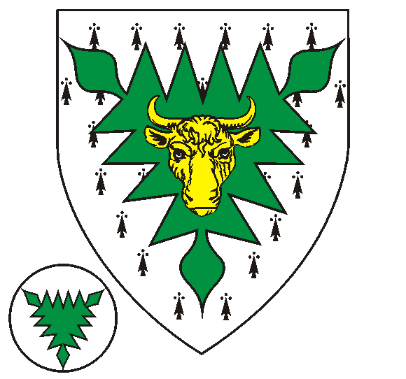
Award of Arms August 15, A.S. XXVIII (1993) 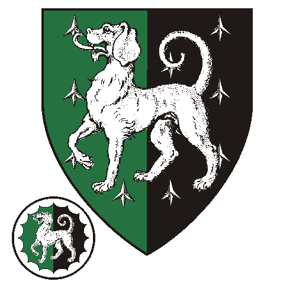
Award of Arms March 26, AS XXVIII (1994) 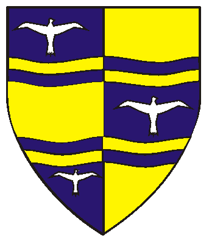
Award of Arms May 30, A.S. XXII (1987) in Oertha 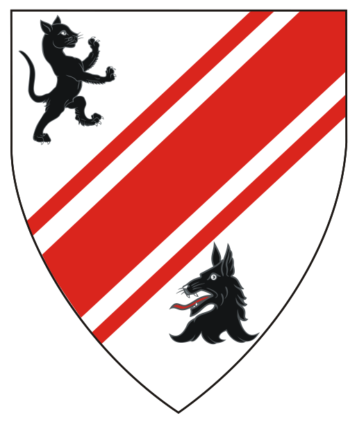
Award of Arms February 27, A.S. XXXIII (1993) in the East Kingdom 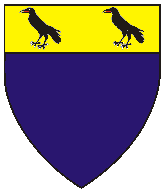
Award of Arms January 23, A.S. XXVIII (1994) 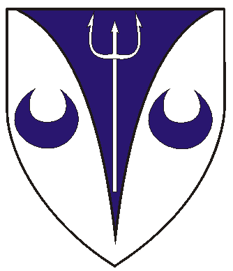
Award of Arms January 18, A.S. XXXII (1998) 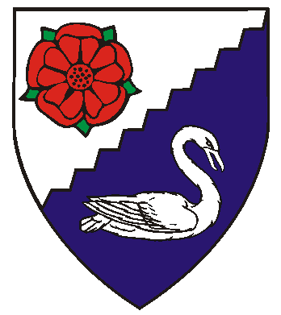
Award of Arms December 10, AS XXIX (1994) 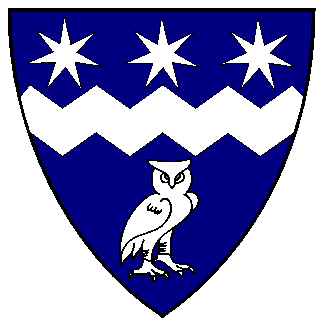
Award of Arms December 7, A.S. XXXI (1996) by Gregor & Alicianne 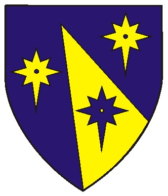
Award of Arms May 26, A.S. XXV (1991) by Phelan and Vanora 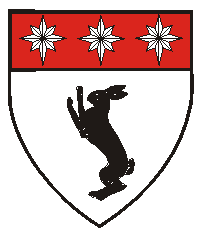
Award of Arms July 19, A.S. XXI (1986) by Eric & Erlyn
Award of Arms May 27, A.S. XXX (1995) by Cybi & Victoria 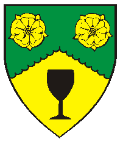
BADGE: Per fess wavy sable and gules,
Award of Arms Sep 16, AS XXIV (1989) by Brendan & Aryana Award of Arms January 19, AS XXXI (1997) by Cybi & Victoria
Award of Arms October 11, XXXII (1997) by Nicholaus & Alyssia
Award of Arms January 19, AS XXXI (1997) by Cybi & Victoria
Mistress Sighni Ivarsdotter, O.L. (aka Giuliana di Benedetto Falconieri)
July 15, AS XXXV (2000) by Magnus & Esperanza
Mistress Margery Garret, O.P., O.L.
August 31, AS XXXVII (2002) by Fergus and Margarita
Magistra Cynehild Cynesigesdohtor, O.P., O.L.
Award of Arms October 30, AS XXXIX (2004) Garick and Yasamin of Calontir
Award of Arms October 11, AS XXXII (1997) by Nicholaus & Allysia
Sir Gregoire de Lyon
Award of Arms August 22, AS XXVII (1992) by Nicholaus & Alyssia
Misress Anna di Caterina Neri, O.P., O.L.(fka Annah Narie, Hawke of Whitefeather)
Award of Arms January 18, AS XXXI (1997) by Gregor & Alicianne
Master Halfdan Ozurarson (aka Thomas Sorngrym), O.P.
Award of Arms January 15, AS XXXIV (2000) by Fabian & Brynn
Baron Gavin Woodward O.P.
Azure, two chevronels braced and on a chief wavy argent three spruce trees vert.
Award of Arms January 14, AS XL (2006) by Fabian and Eliska
Master Bran Mac Fynin,O.L.
Sir Sevastian Agafangilovich Golytsin
Master Alaryn Aecanstaef
Award of Arms July 14, AS XIX (1984) by Ronald & Dierdriana
Mistress Ceara ingen Ailchon (fka Ceara inghean Alcan)
Award of Arms & Leaf of Merit December 10, AS LI (2016) by Alfarr & Eilis
Leaf of Merit, Jul 20, AS XLVIII (2013), Kenric & Katerina
Master Thomas MacEwan
Award of Arms November 13, A.S. XXXIX (2004) by Fergus & Margarita
Sir Gwydion ap Arden (fka Gareth the Wanderer)
January 23, AS XXII (1988) by Jade & Anastacia
Master Colum Mac Eoghain ui Neill O.P.
Award of Arms December 6, A.S. XLIII (2008) by Karl and Élise
Award of Arms December 6, AS XLIII (2008) Karl & Élise
Award of Arms December 4, AS XXXIV (1999) by Nicholaus & Allysia
Award of Arms January 19, AS XLVIII (2013) Obadiah & Ascelin
Award of Arms March 29, AS XLII (2008) by Alrik and Slaine of the Outlands
Award of Arms March 29, AS XLII (2008) by Alrik and Slaine of the Outlands
PATENTS OF ARMS of Oertha
To the Grants of Arms, Leaves of Achievement, and Court Baronies : Part I
To the AA's Part V Page
To the AA's Part VI Page
To the AA's Part VII Page
Some artwork provided by owners of arms depicted.
Click "Back" to return or click
To Khevron's Heraldry Page
West Kingdom Order of Precedence,
or the O.P.'s of other Kingdoms.
Information framed in blue are links to personal web-pages.
Contact me to forward corrections - Address at bottom of each page.
Per bend sable and gules,
a bendlet Or between a wolf's head erased argent
and a tower sable, fimbriated Or.
Master of Arms January 5, A.S. XIV (1980) in Atenveldt
Sir Ragnar of Blackspruce
Sable, a rattlesnake coiled to sinister Or,
a base of flames proper
Knight September 13, A.S. XV (1980)
Court Baron January 8, A.S. XVII (1983)
Mistress Sharane de Kondrack
Argent, on a bend sinister sable,
a scarpe argent, ermined gules
Pelican September 13, A.S. XV (1980)
Laurel January 28, A.S. XVIII (1984)
Court Baroness July 14, A.S. XIX (1984)
Master Hugh McGlammoraga of the North, Baron Eskalya
(Deceased)
Founding Baron - Eskalya (with Selenia)
Grant of Arms January 20, A.S. XIII (1979)
Pelican July 12, A.S. XVI (1981)
Mistress Selenia of Silverwood, Baroness Eskalya
Founding Baroness - Eskalya (with Hugh)
Grant of Arms January 20, A.S. XIII (1979)
Pelican July 12, A.S. XVI (1981)
Mistress Morgana yr Oerfa, O.P., O.L., Baroness Winter's Gate
Per saltire gules and sable,
in pale two mullets and in fess a decrescent and an increscent argent
Pelican December 5, A.S. XVI (1981)
Founding Baroness of Winter's Gate
Grant of Arms March 20, A.S. XXII (1988)
Baroness of the Court of the West January 16, A.S. XXXIX (2005)
Stepped down as Baroness of Winter's Gate April 23, A.S. XXXIX (2005)
Laurel July 20, A.S. XLIII (2008) by Titus and Eilis
Sir Olaf Bearcrusher
Counter-ermine, a pale embattled between two bears combattant argent
Knight August, A.S. XVII (1982) in Atenveldt
Maestro Hirsch von Henford, O.L., O.P.
Per pale Or and vert, two stag's heads erased respectant counterchanged.
Laurel January 8, A.S. XVII (1983)
Grant of Arms April 27, A.S. XXV (1991)
Pelican January 4, A.S. XXVI (1992)
Court Baron January 5, A.S. XXXVI (2002)
Augmentation of Arms November 19, A.S. XVII (2022) by Cyrus and Caitriona
Mistress Danpira Snowsong of Skyhaven, O.L.
Per saltire argent and gules,
on a lozenge counterchanged a leopard’s face jessant-de-lys Or
BADGE: Per saltire argent and gules, a lozenge counterchanged.
Laurel July 12, A.S. XVIII (1983)
Mistress Marya Nordama of Blackspruce, O.P.
(Deceased)
Or, a dragon courant to sinister,
wings elevated and addorsed gules, a base of flames proper.
Court Baroness January 8, A.S. XVII (1983)
Pelican July 12, A.S. XXVIII (1983)
Mistress Nerissa Meraude de la Fontain, O.L., O.P.
Argent, two peacocks pavanated respectant proper,
a point pointed vert.
BADGE: Gules, a griffin passant to sinister
bearing in it's sinister talon a goblet Or.
Laurel January 28, A.S. XVIII (1984)
Pelican January 28, A.S. XVIII (1984)
Mistress Katriona Gwen Fergus, O.P.
Vert, on a saltire gules fimbriated argent
a garden rosebud bendwise sinister argent, slipped and leaved vert,
all within a bordure argent
Pelican July 14, A.S. XIX (1984)
Mistress Elaine of Rainbow's End, O.P., Baroness Earngyld
Azure, a pair of hands, couped at the wrists appaume argent,
and in chief a rainbow couped gules, argent, vert and Or.
Founding Baroness Earngyld
Pelican January 19, A.S. XIX (1985)
Grant of Arms 20, March, A.S. XXII (1988)
Court Baroness December 9, A.S. XXIV (1989)
Master Black Taylor of Lochaber, O.P.
Argent, a sewing needle palewise within on a mascle sable
in cross four plates.
BADGE: Vert, a dexter arm erased palewise embowed proper
grasping a needle bendwise argent.
Pelican April, A.S. XIX (1985) in Caid
Master Adam Elfchaser, O.P., O.L.
Per fess vert and Or, a mermaid sejant to sinister argent,
tailed vert, crined Or.
Grant of Arms May 5, A.S. XIX (1984)
Grant of Arms October 6, A.S. XIX (1984)
Pelican July 13, A.S. XX (1985)
Laurel January 17, A.S. XXI (1987)
Court Baron July 22, A.S. XXV (1990)
Master Wolf Feder Weiß, O.P.
Or, a bar gemel enhanced gules between a quill fesswise reversed
and three gouttes azure.
Laurel, January 17, A.S. XXI (1987)
Court Baron October 7, A.S. XXIV (1989)
Pelican July 21, A.S. XXV (1990)
Mistress Alysaundra ferch Llewellyn, O.P.
Per bend vert and argent, a lion dormant within an annulet counterchanged.
Pelican July 22, A.S. XXIV (1989)
Baroness of Earngyld December, A.S. XXIV (1989)
through December, A.S. XXIX (1994)
(with Amalric to October, A.S. XXVI (1991)
Court Baroness *Unknown*
Mistress Flanna Dunwalton, O.L., O.P.
Quarterly gules and ermine, a rose sable between in bend two mullets argent.
BADGE: (Fieldless) On a rose per pale argent and sable, barbed gules,
a lion-dragon statant counterchanged.
Laurel July 22, XXIV (1989)
Grant of Arms August 23, A.S. XXVII (1992)
Court Baroness November 15, A.S. XXXVI (2001)
Pelican July 20, A.S. XXXVII (2002)
Master Fyodor the Friendly, O.P.
(Deceased)
Azure, an owl displayed
between three marten's heads cabossed, one and two, argent.
BADGE: Azure, a coney sejant tergiant within a bordure embattled argent.
Pelican July 22, A.S. XXIV (1989)
Mistress Patrice of the Misty Fjords, O.L.
Argent, a wyvern erect contourny azure grasping
by the blade a sword inverted sable, a bordure azure.
Laurel July 22, A.S. XXIV (1989)
Baroness of Earngyld December, XXIX (1994)
through June, A.S. XXXII (1997) (with Martin)
Court Baroness June 15, A.S. XXXII (1997)
Mistress Jenyvr of Squalid Manor, O.L.
Or, a turnip purpure, leaved vert, distilling a goutte de sang.
Grant of Arms January 7, A.S. XXIII (1989)
Laurel December 16, A.S. XXIV (1989)
Sir Timothy ap Caradoc
Knight December 16, A.S. XXIV (1989)
Mistress Wynflaed of Hawksmir, O.P.
Per pale azure and argent, a tower and in chief
two hawk's heads erased addorsed counterchanged.
Pelican January 6, A.S. XXIV (1990)
Mistress Piasa Dragonsaver, O.P.
(Deceased)
Azure, on a two handled mug per pale Or and argent,
a dragon segreant vert bearing a sword sable.
Court Baroness January 17, A.S. XXI (1987)
Pelican January 21, A.S. XXIV (1990)
Mistress Penelope O'Suleabhain, O.L., O.P.
Vert, on a cross, each arm nowy of a lozenge argent,
four quatrefoils slipped vert.
Laurel March 17, A.S. XXIV (1990)
Grant of Arms January 27, XXV (1991)
Pelican January 22, A.S. XXVI (1992)
Baroness of Eskalya December A.S. XXVI (1991)
through December, A.S. XXIX (1994) (with Juan Miguel)
Mistress Valija Ansdottir, O.L., O.P.
(Deceased)
Court Baroness January 23, A.S. XXII (1988)
Laurel January 27, A.S. XXV (1991)
Pelican December 9, A.S. XXX (1995)
Mistress Hilary Fairehaven, O.P.
Quarterly, vert and erminois
a key bendwise sinister, wards to base, purpure
Court Baroness September 8, A.S. XXV (1990) in Atlantia
Grant of Arms September 8, AS XXV (1990) in Atlantia
Pelican February 23, A.S. XXV (1991) in Atlantia
Master Mikael auraprestr, O.P.
(aka Juan Miguel Esteban Alfredo de Valencia)
Per pale vert and argent, three towers counterchanged.
Per fess Or and vert, a falcon's head erased to sinister sable
and a triple-towered castle argent.
Pelican March 30, A.S. XXV (1991)
Baron of Eskalya December A.S. XXVI (1991)
through December, A.S. XXIX (1994) (with Penelope)
Baron of the Court July 18, A.S. XLV (2010) by Alfar and Kaetiley
Master Targan de Montfort of Crystal Caverns, O.P.
Per fess Or and purpure,
in chief two pairs of arrows in saltire sable
and in base eight lozenges in annulo, points to center, Or
Pelican October 5, A.S. XXVI (1991)
Master Ardrude PenWaer, O.L.
(fka Rolande Dresden the Hephestian)
(Deceased)
Laurel December 7, A.S. XXVI (1991)
Court Baron January 14, A.S. XL (2006)
Master Morgan Lyonel, O.P.
(Deceased)
Argent, a saltire gules surmounted by a sea-lion statant,
all between four mullets sable
Pelican December 7, A.S. XXVI (1991)
Court Baron November 15, A.S. XXXVI (2001)
Master Aldwin Longwalker
(Deceased)
Sable, on a sinister gore Or, a cross crosslet fitchy sable,
issuant out of dexter chief a sun Or.
Grant of Arms August, A.S. XXVII (1992) in Atenveldt (Artemisia)
Order of the Pelican July, A.S. XXVIII (1993) in Atenveldt (Artemisia)
Master Tancred de Fraser, O.P., O.L.
Or, a cross fleury gules between four hurts, a chief rayonny sable
Laurel July 23, A.S. XXIX (1994)
Baron of Eskalya December, A.S. XXIX (1994)
through February, A.S. XXXIII (1999)
Court Baron February 6, A.S. XXXIII (1999)
Master Karl von Montfort, O.P.
Vert ermined, three piles in point argent
each charged with a mug reversed sable.
Pelican July 24, A.S. XXIX (1994)
Jacqueline de Lioncourt (aka Arwen MacDougal), O.P.
Vert ermined, three piles in point argent
each charged with a mug reversed sable.
Pelican January 10, A.S. XXXII (1998) Sven & Signy of An Tir
Mistress Fredericka Jean Grey, O.P.
Azure, a falcon jessed and belled,
on a chief embattled Or, three horseshoes inverted azure.
Pelican January 19, A.S. XXXI (1997)
Mistress Cassandra von Verden, O.P.
Erminois, on a nesselblatt vert a rose slipped and leaved Or.
Pelican July 18, A.S. XXXIII (1998)
Master Francis Bull of Kent, O.P.
(deceased)
Erminois, on a nesselblatt vert a bulls head cabossed Or.
BADGE: Fieldless, a nesselblatt vert
Pelican July 18, A.S. XXXIII (1998)
Master Khevron Oktavii Tikhikovich Vorotnikov, O.P.
Per pale vert and sable, a semy of caltrops and a talbot passant argent.
Badge: Per pale vert and sable, a talbot passant and a bordure invected argent.
Pelican January 15, A.S. XXXIV (2000)
Baron of Winter's Gate (w/Morgana) July 20, XXXVIII (2003) to April 23, XXXIX (2005)
Baron of the Court of the West January 16, A.S. XXXIX (2005)
Baron of Winter's Gate (w/Merewyn) from April 16, A.S. LVI (2022)
to July 19, AS LX (2025)
Master Breock ot Whitby, O.P., O.L.
Baron of Eskalya
Per pale azure and Or, a fess wavy, cotised wavy, counterchanged,
each azure trait charged with a gull displayed argent.
Pelican December 6, A.S. XXXV (2000) in Artemisia
Laurel October 28, A.S. XLI (2006) by Rolf and Aurora
Baron of Eskalya (with Margaret Anne)
from October 29, A.S. XLI (2006)
Grant of Arms August 16, A.S. XLIV (2011) by Titus and Eilis
Master Ateño of Annun Ridge, O.L., O.P.
Baron of An Dubhaigeainn
- East Kingdom
Argent, a bend sinister cotised gules between a domestic cat rampant to sinister and a wolf's head erased sable.
Laurel January 13, A.S. XXXV (2001) in the East Kingdom
Pelican August 8, A.S. XLIII (2008) by Konrad & Brenwen, East Kingdom
at Pennsic 37
Master Bjarni Eðvarðarson í Jórvík, O.P., O.L.
(aka Bjarni Edwardsson af Jorvik)
Azure, on a chief Or two ravens sable.
Pelican July 21, A.S. XXXVI (2001)
Baron of Eskalya (with Annora)
from July, A.S. XXXVII (2002)
to October 29, A.S. XLI (2006)
Laurel May 24, A.S. XXXVIII (2003)
Court Baron October 29, A.S. XLI (2006)
Sir Colin MacLear
Argent, on a pile ploye between two crescents azure, a trident argent
Knight July 21, A.S. XXXVI (2001)
Mistress Bronwen Fitz Lear, O.P.
(fka Lisabetta Webster)
Per bend sinister indented argent and azure,
a rose gules barbed vert and a swan naiant contourny argent.
Baroness of Earngyld from June, 1997 - December, 1999
Court Baroness August 26, A.S. XXXV (2000)
Pelican November 8, A.S. XXXVI (2001) West Marches
Mistress Guernan Cimarguid, O.L.
Azure, a dance enhanced between in chief three mullets of seven points
and in base an owl contourny argent.
Laurel January, A.S. XXXVI (2002) in Outlands
Sir Magnus Arktos, O.P. (fka Magnus Zwerver)
Azure, on a pile issuant from sinister base
between two compass stars pierced Or,
a compass star pierced azure
Pelican May 4, A.S. XXXVII (2002) by Jade and Megan
Knighted August 25, A.S. XXXVII (2002) by Thorfinn and Cyneswith
Master Sir Alberic Haak, O.P.
Argent, a rabbit rampant sable,
on a chief gules three compass stars argent.
Grant of Arms December 8, A.S. XXXVI (2001) by Hauoc & Ginevra
Pelican December 13, A.S. XXXVII (2002) by Thorfinn & Cyneswith
Ash Leaf January 6, A.S. LVIII (2024) by Lucius and Anne
Knight July 18, A.S. LXI (2026) by Miles and Yusya
Mistress Isabelle the Fair, O.P.
.
Pelican December 13, A.S. XXXVII (2002) by Thorfinn & Cyneswith
Mistress Margaret Anne of Somerset, O.L., O.P.
Baroness of Eskalya
Per chevron engrailed vert and Or,
two roses Or and a goblet sable.
in chief a goblet fesswise reversed Or.
Award of Arms May 30, AS XXII (1987) by Brendan & Aryana
Rose Leaf December 15, AS XXXVI (2001) by Hauoc & Ginevra
Laurel January 17, A.S. XXXVIII (2004) by Hans and Ivone
Pelican October 29, A.S. XLI (2006) by Rolf and Aurora
Baroness of Eskalya (with Breock)
from October 29, A.S. XLI (2006)
Grant of Arms August 16, A.S. XLIV by Titus and Eilis
Dame Elspeth Buchannane of Loch Lomond, O.P.
Argent, a swan naiant sable within an annulet azure.
Rose Leaf December 6, AS XXVII (1992) by Nicholaus & Alyssia
Leaf of Merit January 19, AS XXXI (1997) by Gregor & Alicianne
Court Baroness May 24, AS XXXVIII (2003) by Alden & Constantina
Pelican January 18, A.S. XXXVIII (2004) by Hans and Ivone
Grant December10 A.S. LI (2016) by Alfarr & Eilis
Mistress Clare Elena de Montfort, O.P.
Or, a horse rampant gules,
a chief embattled sable.
Leaf of Merit January 19, XXXVII (2003) by Fergus & Margarita
Pelican January 16, A.S. XXXIX (2005) by Alden and Constantina
Baroness of Eskalya (with Cynehild) December 10, A.S. LI (2016)
to December 8, A.S. LII (2018)
Scarf of the Rose Leaf, Order of the/Grant of Arms July 16, A.S. LVIII (2023) Ciar
Princess of Oertha (with Søren)
January 18, A.S. LX (2026) to July 19, A.S. LXI (2026)
Viscountess July 19, A.S. LXI (2026) by Hans and Elena
Mistress Magdalina Georg'eva Oshitkovna Ochakovicha, O.P., O.L.
(aka Magdalena Ochastka)
Per fess vert and azure, a mermaid in her vanity argent tailed Or between in chief two flamingos statant respectant argent.
Leaf of Merit July 20, XXXVII (2002) by Jade & Megan
Grant of Arms January 16, A.S. XXXIX (2005)
by Alden and Constantina
Pelican January 15, A.S. XL (2006) by Fabian & Eliska
Mistress Angustias McKeown, O.L.
Rose Leaf December 15, AS XXXVI (2001) by Hauoc & Ginevra
Laurel January 15, A.S. XL (2006) by Fabian & Eliska
Per fess argent and paly gules and argent, a fess gules
and in chief an estoille between two fleurs-de-lys gules
Order of the Rose Leaf January 16, AS XXXIX (2005) by Alden and Constantina
Order of the Leaf of Merit January 16, AS XXXIX (2005) by Fergus and Margarita
Laurel August 15, A.S. XLIV (2009) by Alden and Constantina
Per fess embattled sable mullety argent and gules, in base a bee argent marked sable.
Order of the Leaf of Merit January 16, AS XXXIX (2005) by Alden and Constantina
Western Lily July, AS XLII (2007)
Pelican August 15, A.S. XLIV (2009) by Alden and Constantina
Grant of Arms August 16, A.S. XLIV by Titus and Eilis
Baroness of the Court April 9, A.S. XLV (2011) Jade and Catherine
Laurel December 3, A.S. XLVI (2011) Rolf and Aurora
(fka Clare de Norwude)
Azure, a bear passant argent between three mullets Or, a bordure argent.
Badge. (Fieldless) On a bear passant azure a mullet argent.
Award of Arms May 6, AS XLI (2006) Semjaka and Xorazne of Calontir
Rose Leaf July 18, A.S. XLIV (2009) Fathir and Etain
Ash Leaf March 6, A.S. XLIV (2010) Uther and Kara
Leaf of Merit May 1, A.S. XLV (2010) Uther and Kara
Pelican July 17, A.S. XLVI (2011) Marc and Patricia
Laurel January 22, A.S. XLVI (2012) Uther and Kara
Baroness of Eskalya (with Clare-Elena) December 10, A.S. LI (2016)
to December 8, A.S. LII (2018)
Grant of Arms, Order of the Royal Missile Company July 19, AS LX (2025) Sighfridh & Sof'ia
Master Ii Saburou Katsumori, O.P.
(aka Godric Logan)
Argent, a Japanese well frame crosswise
between four crescents in cross horns inwards conjoined gules.
Order of the Pearl/Grant of Arms August 13, A.S. XXXVIII (2003)
by Logan IV and Isabel II Monarchs of Atlantia
Leaf of Merit October 9, A.S. XLV (2010) Titus & Arianwen
(Palatine) Baron of the Far West,
April, 2010 to October, A.S. XLV (2010)
Court Baron October 30, A.S. XLV (2010) by Titus & Arianwen
Pelican August 11, A.S. XLVI (2011) by Marc & Patricia (West)
(fka Gregory the Pict, Gregoire d' Angers)
Gules, a chevron counter-compony vert and argent
between two fleurs-de-lys and a pavillion Or.
Baron of Cynnabar (with Giovanna Adimari) (Mid-Realm)
September 3, A.S. XL (2005) to March 27, A.S. XLIV (2010)
Court Baron March 27, A.S. XLIV (2010)
by Dag and Anne Marie (Mid-Realm)
Knight May 5, A.S. XLVII (2012)
by Eikbrandr and Runa (Mid-Realm)
Per bend sinister azure and gules ermined, in canton an eagle Or.
Leaf of Merit December 15, AS XXXVI (2001) by Hauoc & Ginevra
Rose Leaf August 15, AS XLIV (2009) Titus & Eilis
West Kingdom Paragon of Merriment August 15, AS XLIV (2009) Titus & Eilis
Pelican July 20, A.S. XLVIII (2013) by Thorfinn & Étaín
Laurel September 25, A.S. LVI (2021) Miles and Jitka
Argent, two brown bears combattant proper
and on a chief indented vert three mullets of eight points Or.
Leaf of Merit May 24, XXXVIII (2003) by Alden & Constantina
West Kingdom Paragon of Merriment July 20, AS XLVIII (2013) by Thorfinn & Étaín
Grant of Arms January 19, A.S. XLVIII (2014)
Pelican January 19, A.S. XLVIII (2014)
by Thorfinn & Violante
Baron of Selviergard August, A.S. IL (2014) to May, A.S. LVIII
Mistress Sapphira the Navigator, O.P.
May 12, AS XXV (1990) by Ronald II & Bronwyn II (East Kingdom)
Leaf of Merit July 19, A.S. XLIX (2014) Kennric & Dagmar
Leaf of Merit May 30, A.S. L (2015) Shawn & Arabella
Baroness July 19, A.S. L (2015) Hauoc & Mina
Pelican January 16, A.S. L (2016) Marc & Patricia
(fka Gavin Meadowbrook)
Baron of Eskalya
Leaf of Merit March 6, A.S. XLIV (2010) Uther and Kara
Court Baron July 16 A.S. LI (2016) Hans & Ivone
Pelican December 10, AS LI (2016) Alfarr & Eilis
Baron of Eskalya (with Celestria) December 8, A.S. LII (2018) to Present
(aka Bránn Mac Finnchad, Beorn ce Bacaire)
Sable, a bend sinister cotised between two gryphon's heads erased argent.
Award of Arms September 20, AS XLIII (2008) by Karl & Élise
Rose Leaf July 22, AS XLVII (2012) Hauoc & Mina
Leaf of Merit January 19, AS XLVII (2013) Obadiah & Ascelin
Ash Leaf April 26, AS XLVIII (2014) by Thorfinn & Violante
Laurel August 26, AS LII (2017) by Miles & Ariela
Master of Defense June 23, A.S. LIX (2024) by Conor and Isa
Per bend sinister embattled sable and gules, an anvil reversed argent and a tower Or.
Award of Arms May, 29 A.S. XLV (2010) by Kenric & Rolynnda
Ash Leaf January, 17 A.S. XLIX (2015) by Miles & Æsa
Rose Leaf July, 16 A.S. LI (2016) by Shawn & Arabella
Western Lily January, 21 A.S. LII (2018) by Hans & Helga
Knighted July 18, A.S. LIII (2018) by Uther and Kara
Mistress Gisla Ǫðikollr (fka Cassandra of Winter's Gate, O.L.
Argent, in pale a domestic cat sejant vert and an anvil sable.
Badge: (Fieldless) Atop an anvil sable, a domestic cat dormant vert.
Award of Arms December 20, A.S. XLIX (2014) Gregor & Isabella
Rose Leaf July 19, A.S. L (2015) by Hauoc & Mina
Laurel September 26, A.S. LVI (2021) by Miles and Jitka
Baroness January 22, A.S. LVII (2023) by Kenric and Dagmar
Leaf of Merit July 20, A.S. LIX (2024) Hans & Elena
Baroness Celestria Textrix, O.P.
Baroness of Eskalya

Or fretty azure, on a pile vert an owl contourny argent.
Badge: Per chevron azure and vert, a mushroom erminois.
Award of Arms June 28, AS XXXVIII (2003) by Magnus and Esperanza
Leaf of Merit March 6, A.S. XLIV (2010) Uther and Kara
Court Baroness July 16 A.S. LI (2016) Hans & Ivone
Baroness of Eskalya (with Gavin) December 8, A.S. LII (2018) to Present
Pelican September 26, A.S. LVI (2021) Miles and Jitka
Per chevron embattled Or and sable,
two lions passant guardant gules and a sword argent.
Ash Leaf August 20, AS XL (2005) by Magnus & Esperanza
Order of the Leaf of Merit January 14, AS XL (2006) by Fabian & Eliska
Western White Scarf/Grant of Arms August 15, AS XLIV (2009) Titus & Eilis
Master of Defense July 2, A.S. LVII (2022) by Kenric and Dagmar
Azure, in chief a narwhal naiant argent, a bordure argent estoilly azure.
Rose Leaf August 10, A.S. LVII (2022) by Kenric and Dagmar at Pennsic War
Court Baroness July 23, A.S. LVII (2022) by Kenric and Dagmar
Pelican July 23, A.S. LVII (2022) by Kenric and Dagmar
Mistress Mairghread dubh inghean Alasdair
Purpure, in pale a Savoy knot and a fret couped argent.
Award of Arms, Apr 17, AS XXXVIII (2004) by Cyrus & Amber
Award of Arms, Jul 21, AS XLII (2007) by Leon & Muriel
Grant of Arms, Jun 22, AS LIV (2019), Hauoc & Alyce
Pelican August 20, LVII (2022) by Kenric and Dagmar
Argent, on a pale between in chief two mullets vert, a lighthouse argent.
Leaf of Merit May 4, A.S. XLVIII (2013) by Obadiah & Ascelin
Master of Defense August 20, LVII (2022) by Kenric and Dagmar
Argent, a sword inverted its blade surmounted by two roses in
saltire slipped and leaved sable.
Grant of Arms (Order of the Gage) March 14, XLVIII (2014)
Knight May 27, LVIII (2023) in Æthelmearc
Mistress Bernadette of Eskalya MoD
Per pale argent and azure, three comets counterchanged.
Award of Arms December 7, A.S. LIV (2019) by Hans & Helga
Ash Leaf July 24, A.S. LVII (2022) by Kenric and Dagmar
Ash Leaf July 25, A.S. LVIII (2023) by Cruscillus and Eilis
Master of Defense July 25, A.S. LVIII (2023) by Ciar
Master Hraði Kottr O.L.
Gules, a fess sable fimbriated between a domestic cat passant and three pheons argent.
Rose Leaf July 19, AS L (2015) by Hauoc & Mina
Ash Leaf January 19, A.S. LIII (2019) Culann and Sefa
Leaf of Merit April 15, AS LVII (2023) by Cruscillus & Eilis
Scarf of the Rose Leaf, Order of the/Grant of Arms July 16, A.S. LVIII (2023) Ciar
Laurel June 22, A.S. LIX (2024) by Conor and Isa
Baron January 18, A.S. LIX (2025) by Fabian & Eliška
Scarf of Merit January 17, A.S. LX (2026) by Kolskeggr & Katelinen
Per pale argent and azure, two lions combattant, in chief a sun counterchanged.
August 2, XXXII (1997) by Aaron and Alisandra of Atenveldt
Light of Atenveldt April 2, AS XXXIV (2000) in Atenveldt
Baron of Selviergard (with Vicana) May 27, A.S. LVIII (2023)
to December 13 A.S. LX (2025)
Baron of Selviergard (Solely) to December 13 A.S. LX (2025)
May 23, A.S. LXI (2026)
The Order of the Scarf of Merit (Grant of Arms) June 23, A.S. LIX (2024) by Conor and Isa
Pelican, January 19, A.S. LIX (2025) by Fabian and & Eliška
Grant of Arms, Order of the Royal Missile Company July 19, AS LX (2025) by Sighfridh & Sof'ia
Master Arnþór Hestǫfði O.L.
(Arnthor Hesthofdi)
Quarterly azure and gules, a hippogriff segreant contourny within an orle Or.
Award of Arms December 9, AS LII (2017) Duncan and Violet
Rose Leaf January 22, A.S. LVII (2023) by Kenric & Dagmar
The Order of the Scarf of the Rose Leaf (Grant of Arms) December 14, A.S. LIX (2024) by Thorfinn and Tullia
Laurel, January 19, A.S. LIX (2025) by Fabian and & Eliška
Baroness Ellisif a Reikiavik, O.P.

Per bend sinister azure and purpure, a bend sinister invected argent.
Leaf of Merit January 15, A.S. XLV (2011) by Jade & Catherine
Baroness, January 19, AS XLVII (2013) by Obadiah & Ascelin
Ash Leaf, July 15, A.S. LVIII (2023) by Ciar
Pelican, January 19, A.S. LIX (2025) by Fabian and & Eliška
Grant of Arms, Order of the Royal Missile Company July 19, AS LX (2025) by Sighfridh & Sof'ia
Baroness of Winter's Gate (with Hallbiorn) July 19, A.S. LX (2025)
Baron Hallbiörn Erlændar son (aka Hallbiörn Erlændr), O.P.

Per chevron vert crusilly Or and Or.
Baron, January 19, AS XLVII (2013) by Obadiah & Ascelin
Leaf of Merit May 27, A.S. LVIII (2023) by Cruscillus & Eilis
Ash Leaf, July 15, A.S. LVIII (2023) by Ciar
Pelican, January 19, A.S. LIX (2025) by Fabian and & Eliška
Baron of Winter's Gate (with Ellisif) July 19, A.S. LX (2025)
Master Stephen de le Bere, O.M.
Vert, a bear passant and on a point pointed
argent two roundels in fess azure
Leaf of Merit July 21, AS XXXVI (2001) by Fabian & Susan
Baron of the Court, May, AS XXXVIII (2003) by Alden and Constantina
The Order of the Royal Missile Company July 19, AS LX (2025) by Sighfridh & Sof'ia
Order of the Scarf of Merit December 13, AS LX (2025) by Heinrich & Annora (West)
Order of the Mark July 18, A.S. LXI (2026) by Miles and Tusya
Mistress Úlfhildr Sverradóttir, O.L.
Argent, a saltire azure surmounted by a ram's head cabossed sable, a
bordure azure platy.
Rose Leaf December 4, A.S. LVI (2021) Cruscillus & Vicana
Scarf of the Rose Leaf / Grant of Arms January 19, AS LIX (2025) by Fabian & Eliška
Laurel July 18, A.S. LXI (2026) by Miles and Tusya
Mistress Lyneya of the Burnt Wood, O.P.

Per pall inverted vert, azure, and argent, in cross three forget-me-nots argent and a pine tree sable.
Leaf of Merit January 18, A.S. LIX (2025) by Fabian & Eliška
Scarf of Merit January 17, A.S. LX (2026) by Kolskeggr & Katelinen
Baroness of Selviergard (with Anastasia) May 23, A.S. LXI (2026)
to
Pelican July 19, A.S. LXI (2026) by Miles and Tusya
Mistress Anastasia of the Burnt Wood, O.P.

Per pall inverted azure, purpure, and argent, in cross three butterflies argent and a pine tree sable.
Ash Leaf May 25, AS LIX (2024) by Hans & Elena
Baroness of Selviergard (with Lyneya) May 23, A.S. LXI (2026)
to
Pelican July 19, A.S. LXI (2026) by Miles and Tusya
To Armorial Index Page
Chivalry, Laurels, Pelicans
Starting January, AS XXXV (2002 to 2010)
Starting January, AS XLIV (2010) to December, LIV (2019)
Starting January, AS LIV (2020) to Present
Most artwork on these pages created with CorelDraw! v.3-15 by Khevron.